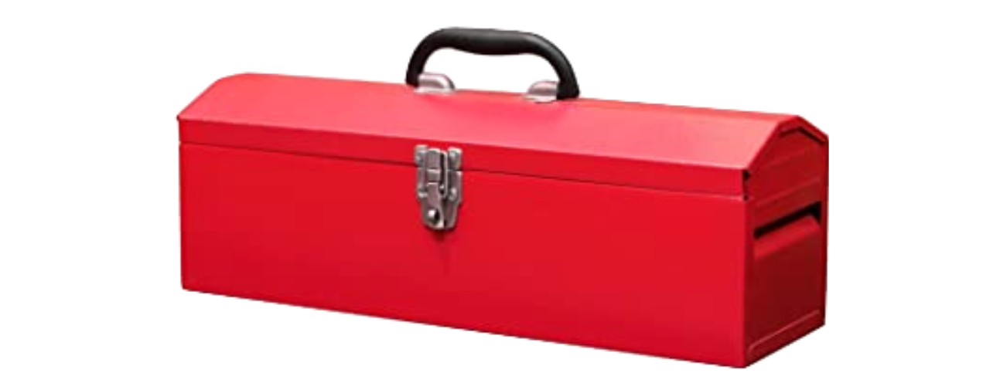

What is digital text analysis?
Having read the NYT piece about social media text analysis, and perhaps from your own life in this digital world of ours!!, you have at least heard about some of the methods that a “computational sociolinguist” or a “digital humanist” might apply to text.
Sentiment analysis
“Positive” versus “negative” words


Tag for more than 2 emotions
Tag for parts of speech
knitr::include_graphics("pos_tagset.png", dpi=100)
Tag for semantic classes
knitr::include_graphics("semantic_tagset.png", dpi=100)
Start by loading our data
First we’ll get an inventory of all the .DOCX files in our project directory.
(textfiles <- list.files(pattern = ".docx"))
[1] "prose and verse csv 500 words.docx"
[2] "Prose and Verse from Shrew.docx" The second file has more formatting and may, for the time being, be more useful. We’ll read it in. Here is the top of its content.
f <- read_docx(textfiles[2])
f %>% head(10)
[1] "I am Christophero Sly; call not me ' honour ' nor 'lordship.' I"
[2] "ne'er drank sack in my life; and if you give me any conserves,"
[3] "give me conserves of beef. Ne'er ask me what raiment I'll wear,"
[4] "for I have no more doublets than backs, no more stockings than"
[5] "legs, nor no more shoes than feet- nay, sometime more feet than"
[6] "shoes, or such shoes as my toes look through the overleather ."
[7] "Lord. Heaven cease this idle humour in your honour !"
[8] "What, would you make me mad? Am not I Christopher Sly, old"
[9] "Sly's son of Burton Heath; by birth a pedlar , by education a"
[10] "cardmaker , by transmutation a bear-herd, and now by present" Here it is, converted to tabular format.
f <-
f %>%
enframe() %>%
select(line = 2) %>%
mutate(file = textfiles[2])
f %>%
head(10) %>%
kbl() %>%
kable_styling(bootstrap_options = "striped",
full_width = F,
position = "left") | line | file |
|---|---|
| I am Christophero Sly; call not me ’ honour ’ nor ‘lordship.’ I | Prose and Verse from Shrew.docx |
| ne’er drank sack in my life; and if you give me any conserves, | Prose and Verse from Shrew.docx |
| give me conserves of beef. Ne’er ask me what raiment I’ll wear, | Prose and Verse from Shrew.docx |
| for I have no more doublets than backs, no more stockings than | Prose and Verse from Shrew.docx |
| legs, nor no more shoes than feet- nay, sometime more feet than | Prose and Verse from Shrew.docx |
| shoes, or such shoes as my toes look through the overleather . | Prose and Verse from Shrew.docx |
| Lord. Heaven cease this idle humour in your honour ! | Prose and Verse from Shrew.docx |
| What, would you make me mad? Am not I Christopher Sly, old | Prose and Verse from Shrew.docx |
| Sly’s son of Burton Heath; by birth a pedlar , by education a | Prose and Verse from Shrew.docx |
| cardmaker , by transmutation a bear-herd, and now by present | Prose and Verse from Shrew.docx |
Narrowing down our interest
I have just received the latest notes from class: the interest seems to be in the difference between verse and prose crossed with an interest in character. I interpret this to mean that there are characters that appear both in verse and in prose sections, and we want to know how the language associated with each character differs from verse to prose.
In the text samples I have, character speech is not marked. We might be better off if we pull Taming of the Shrew from www.gutenberg.org.
Luckily there is an R module that interfaces with the Gutenberg archives. It is called gutenbergr. I will pull the whole text from there.
shakespeare <-
gutenberg_works(author == "Shakespeare, William")
shakespeare %>%
mutate(entry = row_number()) %>%
select(entry, title) %>%
kbl() %>%
kable_styling(bootstrap_options = "striped",
full_width = F,
position = "left") | entry | title |
|---|---|
| 1 | Shakespeare’s Sonnets |
| 2 | Venus and Adonis |
| 3 | King Henry VI, First Part |
| 4 | History of King Henry the Sixth, Second Part |
| 5 | The History of King Henry the Sixth, Third Part |
| 6 | The Tragedy of King Richard III |
| 7 | The Comedy of Errors |
| 8 | The Rape of Lucrece |
| 9 | The Tragedy of Titus Andronicus |
| 10 | The Taming of the Shrew |
| 11 | The Two Gentlemen of Verona |
| 12 | Love’s Labour’s Lost |
| 13 | King John |
| 14 | The Tragedy of King Richard the Second |
| 15 | Romeo and Juliet |
| 16 | A Midsummer Night’s Dream |
| 17 | The Merchant of Venice |
| 18 | King Henry IV, the First Part |
| 19 | The Merry Wives of Windsor |
| 20 | King Henry IV, Second Part |
| 21 | Much Ado about Nothing |
| 22 | The Life of King Henry V |
| 23 | Julius Caesar |
| 24 | As You Like It |
| 25 | Hamlet, Prince of Denmark |
| 26 | The Phoenix and the Turtle |
| 27 | Twelfth Night; Or, What You Will |
| 28 | The History of Troilus and Cressida |
| 29 | All’s Well That Ends Well |
| 30 | Measure for Measure |
| 31 | Othello, the Moor of Venice |
| 32 | The Tragedy of King Lear |
| 33 | Macbeth |
| 34 | Antony and Cleopatra |
| 35 | The Tragedy of Coriolanus |
| 36 | The Life of Timon of Athens |
| 37 | Pericles, Prince of Tyre |
| 38 | Cymbeline |
| 39 | The Winter’s Tale |
| 40 | The Tempest |
| 41 | The Life of Henry the Eighth |
| 42 | A Lover’s Complaint |
| 43 | The Passionate Pilgrim |
| 44 | Twelfth Night |
| 45 | Richard II |
| 46 | Henry IV, Part 1 |
| 47 | Henry V |
| 48 | Henry VI, Part 1 |
| 49 | Henry VI, Part 2 |
| 50 | Henry VI, Part 3 |
| 51 | Richard III |
| 52 | Henry VIII |
| 53 | Coriolanus |
| 54 | Titus Andronicus |
| 55 | Timon of Athens |
| 56 | Hamlet |
| 57 | King Lear |
| 58 | Othello |
| 59 | Shakespeare’s First Folio |
| 60 | The Tragicall Historie of Hamlet, Prince of Denmarke The First (‘Bad’) Quarto |
| 61 | The Tragedie of Hamlet, Prince of Denmark A Study with the Text of the Folio of 1623 |
| 62 | Shakespeare’s play of the Merchant of Venice Arranged for Representation at the Princess’s Theatre, with Historical and Explanatory Notes by Charles Kean, F.S.A. |
| 63 | King Henry the Fifth Arranged for Representation at the Princess’s Theatre |
| 64 | The Works of William Shakespeare [Cambridge Edition] [9 vols.] Introduction and Publisher’s Advertising |
| 65 | The Tempest The Works of William Shakespeare [Cambridge Edition] [9 vols.] |
| 66 | Two Gentlemen of Verona The Works of William Shakespeare [Cambridge Edition] [9 vols.] |
| 67 | The Merry Wives of Windsor The Works of William Shakespeare [Cambridge Edition] [9 vols.] |
| 68 | Measure for Measure The Works of William Shakespeare [Cambridge Edition] [9 vols.] |
| 69 | The Comedy of Errors The Works of William Shakespeare [Cambridge Edition] [9 vols.] |
| 70 | The New Hudson Shakespeare: Julius Cæsar |
| 71 | The Works of William Shakespeare [Cambridge Edition] [Vol. 2] |
| 72 | Shakespeare’s Comedy of The Tempest |
| 73 | The Works of William Shakespeare [Cambridge Edition] [Vol. 7 of 9] |
| 74 | Shakespeare’s Tragedy of Romeo and Juliet |
| 75 | The Works of William Shakespeare [Cambridge Edition] [Vol. 6 of 9 vols.] |
| 76 | The Works of William Shakespeare [Cambridge Edition] [Vol. 8 of 9 vols.] |
| 77 | The Works of William Shakespeare [Cambridge Edition] [Vol. 5 of 9] I, II, and III King Henry Sixth; King Richard III; and two other related plays. |
| 78 | The Works of William Shakespeare - Cambridge Edition (4 of 9) (1863) |
| 79 | The Works of William Shakespeare - Cambridge Edition (3 of 9) (1863) |
So our text is there and available, at index no. 10.
IDs <- shakespeare[c(10),]$gutenberg_id
shakespeare %>%
filter(gutenberg_id %in% IDs) %>%
select(gutenberg_id, title)
# A tibble: 1 x 2
gutenberg_id title
<int> <chr>
1 1508 The Taming of the ShrewLet’s download the play and store it in an R object. I will call it plays (plural in case we add more texts or something.)
plays <- gutenberg_download(IDs, meta_fields = "title")
plays %>% as_tibble()
# A tibble: 4,829 x 3
gutenberg_id text title
<int> <chr> <chr>
1 1508 "THE TAMING OF THE SHREW" The Taming of the Shrew
2 1508 "" The Taming of the Shrew
3 1508 "by William Shakespeare" The Taming of the Shrew
4 1508 "" The Taming of the Shrew
5 1508 "" The Taming of the Shrew
6 1508 "" The Taming of the Shrew
7 1508 "" The Taming of the Shrew
8 1508 "Dramatis Personae" The Taming of the Shrew
9 1508 "" The Taming of the Shrew
10 1508 "Persons in the Induction" The Taming of the Shrew
# … with 4,819 more rowsI’ll convert the data to one-word-per row now. It’s the format we need for any of these analyses.
sentiments <- plays %>%
#group_by(title) %>%
mutate(line = row_number()) %>%
unnest_tokens(word, text,
to_lower = F)
sentiments %>%
slice(150:190) %>%
kbl() %>%
kable_styling(bootstrap_options = "striped",
full_width = F,
position = "left") | gutenberg_id | title | line | word |
|---|---|---|---|
| 1508 | The Taming of the Shrew | 68 | Therefore |
| 1508 | The Taming of the Shrew | 68 | paucas |
| 1508 | The Taming of the Shrew | 69 | pallabris |
| 1508 | The Taming of the Shrew | 69 | let |
| 1508 | The Taming of the Shrew | 69 | the |
| 1508 | The Taming of the Shrew | 69 | world |
| 1508 | The Taming of the Shrew | 69 | slide |
| 1508 | The Taming of the Shrew | 69 | Sessa |
| 1508 | The Taming of the Shrew | 71 | HOSTESS |
| 1508 | The Taming of the Shrew | 72 | You |
| 1508 | The Taming of the Shrew | 72 | will |
| 1508 | The Taming of the Shrew | 72 | not |
| 1508 | The Taming of the Shrew | 72 | pay |
| 1508 | The Taming of the Shrew | 72 | for |
| 1508 | The Taming of the Shrew | 72 | the |
| 1508 | The Taming of the Shrew | 72 | glasses |
| 1508 | The Taming of the Shrew | 72 | you |
| 1508 | The Taming of the Shrew | 72 | have |
| 1508 | The Taming of the Shrew | 72 | burst |
| 1508 | The Taming of the Shrew | 74 | SLY |
| 1508 | The Taming of the Shrew | 75 | No |
| 1508 | The Taming of the Shrew | 75 | not |
| 1508 | The Taming of the Shrew | 75 | a |
| 1508 | The Taming of the Shrew | 75 | denier |
| 1508 | The Taming of the Shrew | 75 | Go |
| 1508 | The Taming of the Shrew | 75 | by |
| 1508 | The Taming of the Shrew | 75 | Saint |
| 1508 | The Taming of the Shrew | 75 | Jeronimy |
| 1508 | The Taming of the Shrew | 75 | go |
| 1508 | The Taming of the Shrew | 75 | to |
| 1508 | The Taming of the Shrew | 75 | thy |
| 1508 | The Taming of the Shrew | 75 | cold |
| 1508 | The Taming of the Shrew | 75 | bed |
| 1508 | The Taming of the Shrew | 76 | and |
| 1508 | The Taming of the Shrew | 76 | warm |
| 1508 | The Taming of the Shrew | 76 | thee |
| 1508 | The Taming of the Shrew | 78 | HOSTESS |
| 1508 | The Taming of the Shrew | 79 | I |
| 1508 | The Taming of the Shrew | 79 | know |
| 1508 | The Taming of the Shrew | 79 | my |
| 1508 | The Taming of the Shrew | 79 | remedy |
With my well-trained eye, I notice that “character names designating who’s speaking” are all set in all-caps. Given this material property, we can insert a column into the data that states, for each word, who is speaking it.
play_with_speaker <-
sentiments %>%
mutate(speaker = NA)
two_word_name <- FALSE
speakername <- NA
for (i in (1:nrow(play_with_speaker))){
# define the word that this loop looks at
myword = play_with_speaker[i,] %>%
pull(word)
# check whether word is identitcal to its all-caps conversion
# if yes, then set it as speaker name
if (myword == toupper(myword) & nchar(myword) > 1){
speakername = myword
}
# write speaker name in speaker column
play_with_speaker$speaker[i] = speakername
cat("\014", i, "of", nrow(play_with_speaker))
}
cat("\014")We’ll export the dataset we’ve created so that next time the chunk won’t need to run. We’ll only need to import the data then.
play_with_speaker %>%
export("play_with_speaker.csv")
play_with_speaker <-
import("play_with_speaker.csv")Let’s get a printout of the number of words spoken by each character.
play_with_speaker %>%
count(speaker, sort = T) %>%
filter(n > 25) %>%
kbl(caption = "Words per character (showing only those with more than 25)") %>%
kable_styling(position = "left",
bootstrap_options = "striped",
full_width = F)| speaker | n |
|---|---|
| PETRUCHIO | 4494 |
| TRANIO | 2423 |
| KATHERINA | 1900 |
| HORTENSIO | 1882 |
| LUCENTIO | 1625 |
| GRUMIO | 1540 |
| GREMIO | 1354 |
| BAPTISTA | 1177 |
| BIONDELLO | 933 |
| LORD | 808 |
| BIANCA | 677 |
| SERVANT | 600 |
| SLY | 598 |
| VINCENTIO | 469 |
| PEDANT | 453 |
| PLAYERS | 214 |
| CURTIS | 199 |
| TAILOR | 139 |
| PAGE | 136 |
| SERVANTS | 112 |
| WIDOW | 112 |
| HUNTSMAN | 110 |
| SCENE | 57 |
| PLAYER | 35 |
| HOSTESS | 34 |
| NATHANIEL | 26 |
For later use, let’s retain a list of the speakers who have significant enough amounts of speech. Let’s set the cutoff even a bit higher, at 400 words.
sig_speakers <-
play_with_speaker %>%
count(speaker) %>%
arrange(desc(n)) %>%
filter(n >400) %>%
pull(speaker)
sig_speakers
[1] "PETRUCHIO" "TRANIO" "KATHERINA" "HORTENSIO" "LUCENTIO"
[6] "GRUMIO" "GREMIO" "BAPTISTA" "BIONDELLO" "LORD"
[11] "BIANCA" "SERVANT" "SLY" "VINCENTIO" "PEDANT" Below is a preview of the data format in which every row shows in the speaker column which character speaks it.
play_with_speaker %>%
slice(340:400) %>%
kbl() %>%
kable_styling(position = "left",
full_width = F)| gutenberg_id | title | line | word | speaker |
|---|---|---|---|---|
| 1508 | The Taming of the Shrew | 108 | esteem | LORD |
| 1508 | The Taming of the Shrew | 108 | him | LORD |
| 1508 | The Taming of the Shrew | 108 | worth | LORD |
| 1508 | The Taming of the Shrew | 108 | a | LORD |
| 1508 | The Taming of the Shrew | 108 | dozen | LORD |
| 1508 | The Taming of the Shrew | 108 | such | LORD |
| 1508 | The Taming of the Shrew | 109 | But | LORD |
| 1508 | The Taming of the Shrew | 109 | sup | LORD |
| 1508 | The Taming of the Shrew | 109 | them | LORD |
| 1508 | The Taming of the Shrew | 109 | well | LORD |
| 1508 | The Taming of the Shrew | 109 | and | LORD |
| 1508 | The Taming of the Shrew | 109 | look | LORD |
| 1508 | The Taming of the Shrew | 109 | unto | LORD |
| 1508 | The Taming of the Shrew | 109 | them | LORD |
| 1508 | The Taming of the Shrew | 109 | all | LORD |
| 1508 | The Taming of the Shrew | 110 | To | LORD |
| 1508 | The Taming of the Shrew | 110 | morrow | LORD |
| 1508 | The Taming of the Shrew | 110 | I | LORD |
| 1508 | The Taming of the Shrew | 110 | intend | LORD |
| 1508 | The Taming of the Shrew | 110 | to | LORD |
| 1508 | The Taming of the Shrew | 110 | hunt | LORD |
| 1508 | The Taming of the Shrew | 110 | again | LORD |
| 1508 | The Taming of the Shrew | 112 | FIRST | FIRST |
| 1508 | The Taming of the Shrew | 112 | HUNTSMAN | HUNTSMAN |
| 1508 | The Taming of the Shrew | 113 | I | HUNTSMAN |
| 1508 | The Taming of the Shrew | 113 | will | HUNTSMAN |
| 1508 | The Taming of the Shrew | 113 | my | HUNTSMAN |
| 1508 | The Taming of the Shrew | 113 | lord | HUNTSMAN |
| 1508 | The Taming of the Shrew | 115 | LORD | LORD |
| 1508 | The Taming of the Shrew | 116 | Sees | LORD |
| 1508 | The Taming of the Shrew | 116 | Sly | LORD |
| 1508 | The Taming of the Shrew | 116 | What’s | LORD |
| 1508 | The Taming of the Shrew | 116 | here | LORD |
| 1508 | The Taming of the Shrew | 116 | One | LORD |
| 1508 | The Taming of the Shrew | 116 | dead | LORD |
| 1508 | The Taming of the Shrew | 116 | or | LORD |
| 1508 | The Taming of the Shrew | 116 | drunk | LORD |
| 1508 | The Taming of the Shrew | 117 | See | LORD |
| 1508 | The Taming of the Shrew | 117 | doth | LORD |
| 1508 | The Taming of the Shrew | 117 | he | LORD |
| 1508 | The Taming of the Shrew | 117 | breathe | LORD |
| 1508 | The Taming of the Shrew | 119 | SECOND | SECOND |
| 1508 | The Taming of the Shrew | 119 | HUNTSMAN | HUNTSMAN |
| 1508 | The Taming of the Shrew | 120 | He | HUNTSMAN |
| 1508 | The Taming of the Shrew | 120 | breathes | HUNTSMAN |
| 1508 | The Taming of the Shrew | 120 | my | HUNTSMAN |
| 1508 | The Taming of the Shrew | 120 | lord | HUNTSMAN |
| 1508 | The Taming of the Shrew | 120 | Were | HUNTSMAN |
| 1508 | The Taming of the Shrew | 120 | he | HUNTSMAN |
| 1508 | The Taming of the Shrew | 120 | not | HUNTSMAN |
| 1508 | The Taming of the Shrew | 120 | warm’d | HUNTSMAN |
| 1508 | The Taming of the Shrew | 120 | with | HUNTSMAN |
| 1508 | The Taming of the Shrew | 120 | ale | HUNTSMAN |
| 1508 | The Taming of the Shrew | 121 | This | HUNTSMAN |
| 1508 | The Taming of the Shrew | 121 | were | HUNTSMAN |
| 1508 | The Taming of the Shrew | 121 | a | HUNTSMAN |
| 1508 | The Taming of the Shrew | 121 | bed | HUNTSMAN |
| 1508 | The Taming of the Shrew | 121 | but | HUNTSMAN |
| 1508 | The Taming of the Shrew | 121 | cold | HUNTSMAN |
| 1508 | The Taming of the Shrew | 121 | to | HUNTSMAN |
| 1508 | The Taming of the Shrew | 121 | sleep | HUNTSMAN |
Tag for sentiment
For now, we’ll just tag for pos. and neg. sentiment words
sentiment <-
play_with_speaker %>%
mutate(word = tolower(word)) %>%
anti_join(stop_words) %>%
inner_join(get_sentiments("bing")) %>%
select(speaker, word, sentiment)
sentiment %>%
slice(300:330) %>%
kbl() %>%
kable_styling(position = "left",
full_width = F)| speaker | word | sentiment |
|---|---|---|
| LUCENTIO | sweet | positive |
| LUCENTIO | beauty | positive |
| LUCENTIO | humble | positive |
| TRANIO | scold | negative |
| TRANIO | din | negative |
| LUCENTIO | sweet | positive |
| TRANIO | love | positive |
| TRANIO | master | positive |
| TRANIO | love | positive |
| LUCENTIO | cruel | negative |
| TRANIO | master | positive |
| LUCENTIO | master | positive |
| LUCENTIO | master | positive |
| LUCENTIO | charm | positive |
| TRANIO | pleasure | positive |
| TRANIO | love | positive |
| LUCENTIO | loves | positive |
| LUCENTIO | slave | negative |
| LUCENTIO | rogue | negative |
| BIONDELLO | master | positive |
| LUCENTIO | quarrel | negative |
| LUCENTIO | fear | negative |
| TRANIO | faith | positive |
| TRANIO | master | positive |
| SLY | sly | negative |
| SLY | saint | positive |
| SLY | sly | negative |
| SLY | excellent | positive |
| PETRUCHIO | beloved | positive |
| PETRUCHIO | knock | negative |
| GRUMIO | knock | negative |
With this data available, we can now plot the sentiment-per-speaker.
First we’ll make a second dataset that is “wider”: it has one row per speaker and it summarizes n_neg, n_pos, n_total, and neg_ratio.
sentiment_wide <-
sentiment %>%
filter(speaker %in% sig_speakers) %>%
count(speaker, sentiment) %>%
pivot_wider(
names_from = sentiment,
values_from = n
) %>%
mutate(n_total = negative + positive,
neg_ratio = negative/positive) %>%
rename(n_neg = negative,
n_pos = positive)Some of this info will be useful to have in the main dataset sentiment. Therefore we’ll left_join() the two.
sentiment %>%
filter(speaker %in% sig_speakers) %>%
count(speaker, sentiment) %>%
left_join(select(sentiment_wide, speaker, n_total)) %>%
#---start plot code---#
ggplot(aes(x = sentiment,
y = n/n_total,
fill = speaker)) +
scale_y_continuous(labels = scales::percent_format()) +
geom_bar(stat = "identity",
position = "dodge") +
scale_fill_viridis_d() +
facet_wrap(~speaker) +
labs(y="sentiment words scored") +
theme_classic(base_family = "Roboto Condensed") +
theme(legend.position = "none")Figure 1: The ratio between neg. and pos.-coded words by character.
Let’s now plot just one bar for each speaker, the neg:pos ratio (or neg_ratio, as I will call it). So the highest value will be for the character with the most negative words.
sentiment_wide %>%
#---start plot code---#
ggplot(aes(x = reorder(speaker, neg_ratio),
y = neg_ratio,
fill = -(neg_ratio)
)) +
geom_hline(yintercept = 1,
colour="black",
linetype="dashed") +
geom_col(alpha=0.8) +
scale_fill_viridis_b() +
labs(
title="Sentiment ratio by character",
subtitle="Values > 1 indicate greater negative counts",
caption="The Taming of the Shrew",
y="negative vs. positive words",
x=NULL) +
coord_flip() +
theme_classic(base_family = "Roboto Condensed") +
theme(legend.position = "none")Figure 2: Sly must be miserable to be around.